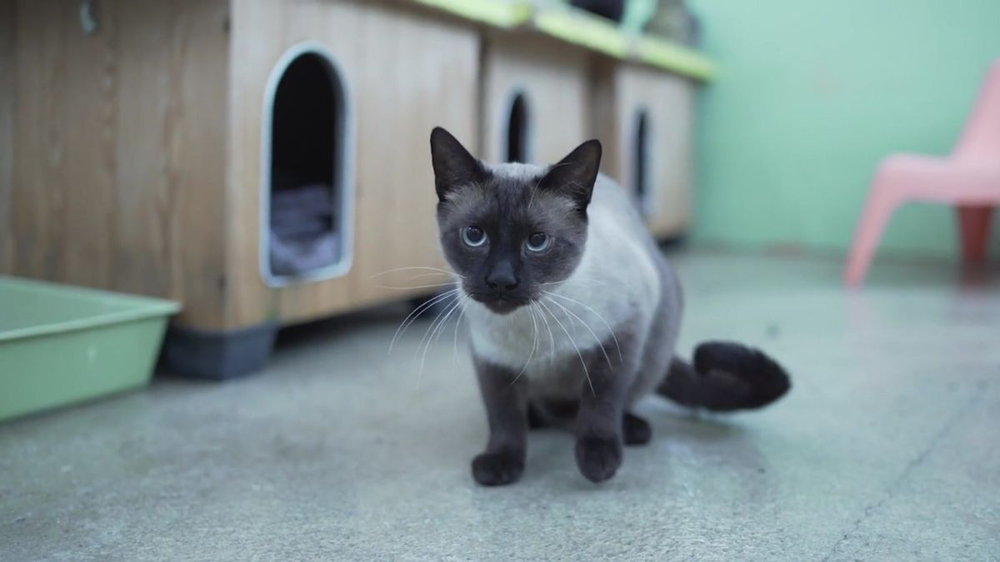

GATOS EN ADOPCIÓN
En esta sección tenemos una lista de gatos que buscan ser adoptados, que necesitan un hogar, y por eso dejamos los nombres de estos y su respectiva foto para poder familiarizarse con estos mininosNuestros Gatos que buscan familia son :
 |
luna |
|  | pelusa |
 |
michi |